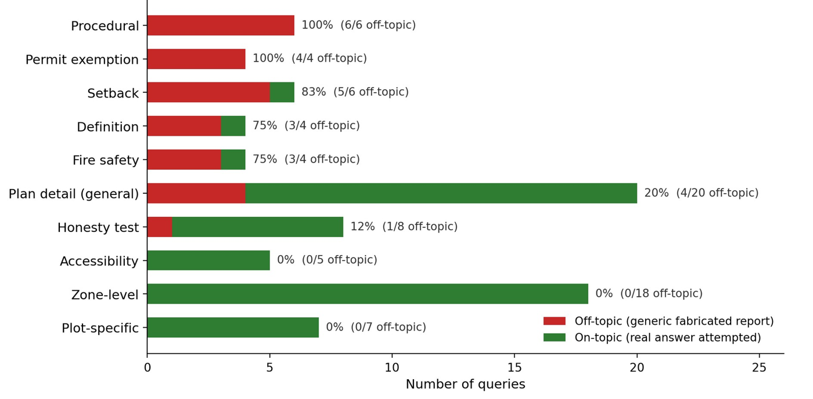
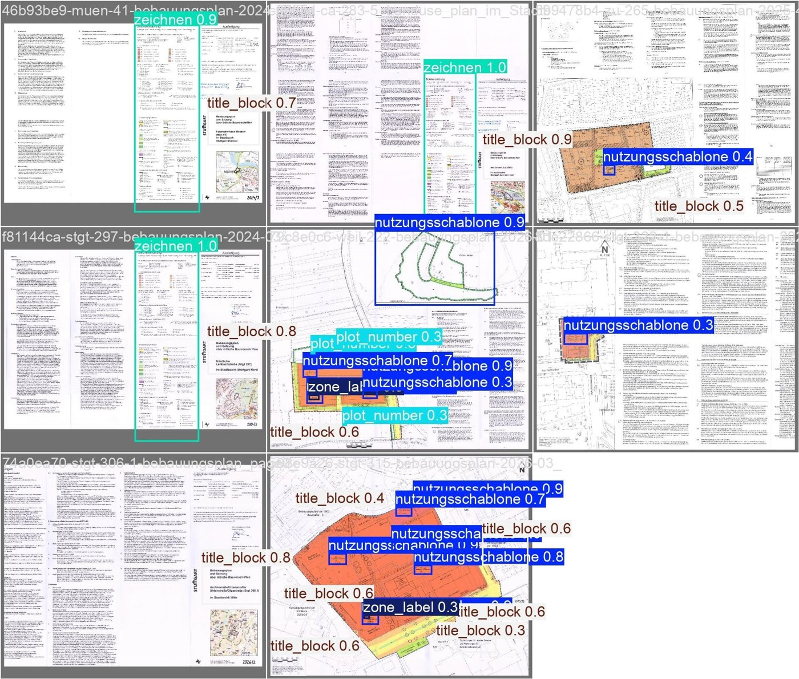
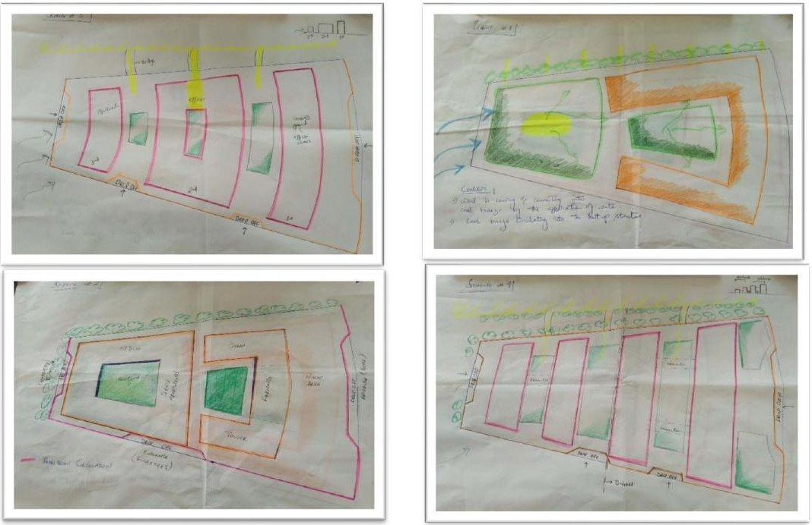
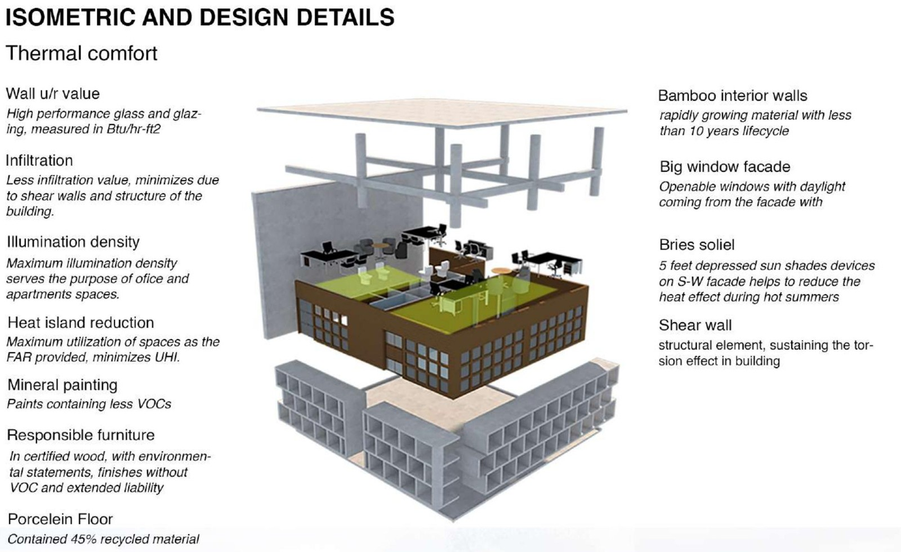
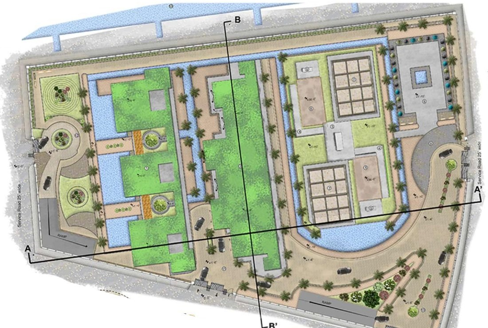
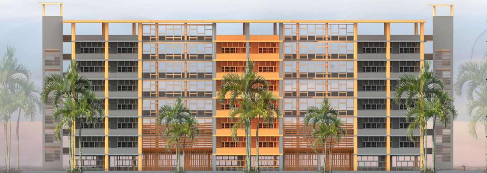
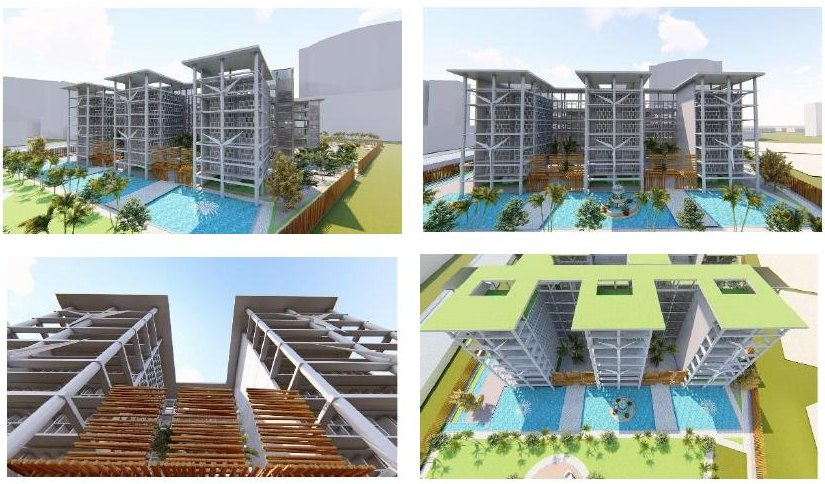
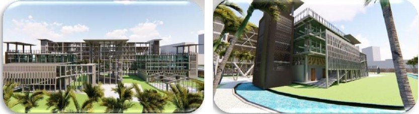

ThesesAbschlussarbeiten
Two theses, one question: what do the rules allow here?Zwei Abschlussarbeiten, eine Frage: Was erlauben die Vorschriften hier?
As an architect I designed within building rules and proposed changes to them. As an engineer I built a system that reads them, and measured how often it is right.Als Architekt habe ich innerhalb von Bauvorschriften entworfen und Änderungen an ihnen vorgeschlagen. Als Ingenieur habe ich ein System gebaut, das sie liest, und gemessen, wie oft es richtig liegt.
AI-assisted regulatory intelligence for built environment professionalsKI-gestützte Regulierungsintelligenz für Fachleute der gebauten Umwelt
Restoring information mobility in Stuttgart's multi-level building governanceInformationsmobilität in Stuttgarts mehrstufiger Bau-Governance wiederherstellen
The questionDie Fragestellung
"What may I build on this plot?" has no single place to be answered in Stuttgart. The answer is spread over three levels of law and three offices.„Was darf ich auf diesem Grundstück bauen?“ lässt sich in Stuttgart an keiner einzelnen Stelle beantworten. Die Antwort verteilt sich auf drei Rechtsebenen und drei Ämter.
- Three levels of law: federal (BauGB, BauNVO), state (LBO Baden-Württemberg) and municipal (development plans and local statutes).Drei Rechtsebenen: Bund (BauGB, BauNVO), Land (LBO Baden-Württemberg) und Kommune (Bebauungspläne und Satzungen).
- Three offices: the city planning office holds the development plans, the building law office handles permits, and the surveying office holds the geodata.Drei Ämter: Das Stadtplanungsamt führt die Bebauungspläne, das Baurechtsamt bearbeitet die Genehmigungen, das Stadtmessungsamt hält die Geodaten.
From expert consultation, a query that involves more than one office takes between 11 and 21 working days. The building law office alone receives about 2,340 queries per month.Nach Auskunft der befragten Fachleute dauert eine Anfrage, die mehr als ein Amt betrifft, zwischen 11 und 21 Arbeitstage. Allein das Baurechtsamt erhält rund 2.340 Anfragen im Monat.
Before designing anything, I modelled this process as a five-lane BPMN diagram, built from correspondence with the offices and checked in an interview with a professor of planning law.Vor jedem Entwurf habe ich diesen Ablauf als BPMN-Diagramm mit fünf Bahnen modelliert, aufgebaut aus der Korrespondenz mit den Ämtern und geprüft in einem Interview mit einem Professor für Planungsrecht.
The system: one question, three independent sourcesDas System: eine Frage, drei unabhängige Quellen
The system answers a question from three sources that do not depend on each other, and then compares them. Where they disagree, it shows no value.Das System beantwortet eine Frage aus drei Quellen, die nicht voneinander abhängen, und vergleicht sie anschließend. Wo sie sich widersprechen, zeigt es keinen Wert an.
In the current version the three layers run separately and a reconciliation module compares their outputs afterwards. A single controller that routes one question to all three is the next development step.In der aktuellen Version laufen die drei Ebenen getrennt, und ein Abgleichsmodul vergleicht ihre Ergebnisse im Nachhinein. Eine zentrale Steuerung, die eine Frage an alle drei weiterleitet, ist der nächste Entwicklungsschritt.
| LayerEbene | What it doesWas sie tut | Built withUmgesetzt mit |
|---|---|---|
| TextText | Retrieval over 12,701 passages of regulation text (6,444 federal, 1,193 state, 1,637 municipal, 3,427 untagged). Two agents, a document specialist and an architecture consultant, write a cited answer in under 90 seconds.Suche über 12.701 Textabschnitte aus Vorschriften (6.444 Bund, 1.193 Land, 1.637 Kommune, 3.427 ohne Zuordnung). Zwei Agenten, ein Dokumentenspezialist und ein Architekturberater, verfassen in unter 90 Sekunden eine Antwort mit Quellenangaben. | CrewAI, OpenAI API, FastAPI, Docker, Railway. Embeddings are compared directly in NumPy, without a vector database.CrewAI, OpenAI API, FastAPI, Docker, Railway. Die Embeddings werden direkt in NumPy verglichen, ohne Vektordatenbank. |
| VisionBild | Finds the regulation table (Nutzungsschablone) on a development plan and reads the site coverage ratio (GRZ), floor area ratio (GFZ), building height, roof rule and zone type. Each value carries a confidence tag. Runs on a laptop CPU in under two seconds per query.Findet die Nutzungsschablone im Bebauungsplan und liest Grundflächenzahl (GRZ), Geschossflächenzahl (GFZ), Gebäudehöhe, Dachvorgabe und Gebietsart. Jeder Wert trägt eine Konfidenzangabe. Läuft auf einer Laptop-CPU in unter zwei Sekunden pro Anfrage. | YOLOv8n trained on 34 plan pages that I annotated in five classes, EasyOCR, Label Studio, Google ColabYOLOv8n, trainiert auf 34 Planseiten, die ich in fünf Klassen annotiert habe, EasyOCR, Label Studio, Google Colab |
| SpatialRaum | Resolves a plot number or an address to its parcel and computes how much of the parcel is built on.Ordnet eine Flurstücksnummer oder Adresse dem Flurstück zu und berechnet, wie viel davon überbaut ist. | ALKIS open data (39,469 parcels and 166,286 building footprints), GeoPandas, QGIS, NominatimOffene ALKIS-Daten (39.469 Flurstücke und 166.286 Gebäudegrundrisse), GeoPandas, QGIS, Nominatim |

How I evaluated itWie ich es evaluiert habe
Three strands, following Design Science Research, so that no single result has to carry the argument.Drei Stränge nach dem Ansatz der Design Science Research, damit kein einzelnes Ergebnis das Argument allein tragen muss.
participants rated an earlier, text-only version in a study run by a student research team at HfWU. Those who used the system live rated it better than those who only watched a video (mean grade 2.46 against 2.98, lower is better).Teilnehmende bewerteten eine frühere, reine Textversion in einer Studie eines studentischen Forschungsteams der HfWU. Wer das System selbst nutzte, bewertete es besser als jene, die nur ein Video sahen (Durchschnittsnote 2,46 gegenüber 2,98, niedriger ist besser).
This says the approach was useful to people. It does not say the answers were correct.Das zeigt, dass der Ansatz als nützlich empfunden wurde. Es zeigt nicht, dass die Antworten richtig waren.
independent sources described the current process: a professor of planning law, the building law office and the city planning office. They agreed on the core problem, that responsibility is split across offices.unabhängige Quellen beschrieben den heutigen Ablauf: ein Professor für Planungsrecht, das Baurechtsamt und das Stadtplanungsamt. Einig waren sie sich im Kernproblem: Die Zuständigkeit ist auf mehrere Ämter verteilt.
They disagreed on whether cross-office questions are escalated to the political level. I kept that disagreement as a finding.Uneinig waren sie, ob ämterübergreifende Fragen auf die politische Ebene eskaliert werden. Diesen Widerspruch habe ich als Befund stehen lassen.
queries with answers that I verified by hand against the plans and the legal text. 19 of them can be compared across all three layers.Anfragen mit Antworten, die ich von Hand an den Plänen und am Gesetzestext geprüft habe. 19 davon lassen sich über alle drei Ebenen vergleichen.
This is the strand that says how often each layer is right.Dieser Strang zeigt, wie oft jede Ebene richtig liegt.
| LayerEbene | CorrectRichtig | Partly correctTeilweise richtig | Confidently wrongSicher, aber falsch | Declined or not attemptedAbgelehnt oder nicht versucht |
|---|---|---|---|---|
| TextText | 5 | 0 | 0 | 14 |
| VisionBild | 5 | 0 | 0 | 14 |
| SpatialRaum | 0 | 1 | 6 | 12 |
- On the 5 zone-level questions, the text and vision layers were right every time.Bei den 5 Fragen auf Gebietsebene lagen Text- und Bildebene jedes Mal richtig.
- On the 14 plot-level questions, neither of them gave an answer. They were never wrong, but never right either.Bei den 14 Fragen auf Flurstücksebene gab keine der beiden eine Antwort. Sie lagen nie falsch, aber auch nie richtig.
- The spatial layer attempted most of the first ten questions and was wrong more often than right, for one systematic reason: an address resolves to the road, not to the building plot.Die Raumebene versuchte die meisten der ersten zehn Fragen und lag öfter falsch als richtig, aus einem systematischen Grund: Eine Adresse wird der Straße zugeordnet, nicht dem Baugrundstück.
The central findingDer zentrale Befund
No single layer is reliable enough to use on its own, and they fail in different ways.Keine Ebene ist allein verlässlich genug, und sie versagen auf unterschiedliche Weise.
In one case all three layers were asked about the same plot and returned three different results: a confident wrong number from the text layer, a low-confidence reading from the vision layer that was not flagged, and a hedge from the spatial layer. Any one of them alone would have looked believable. Side by side, the disagreement is visible.In einem Fall wurden alle drei Ebenen zum selben Flurstück befragt und lieferten drei verschiedene Ergebnisse: eine sichere, aber falsche Zahl aus der Textebene, einen unsicheren, nicht gekennzeichneten Wert aus der Bildebene und eine ausweichende Antwort aus der Raumebene. Jede für sich hätte glaubwürdig gewirkt. Nebeneinander wird der Widerspruch sichtbar.
Combining layers also produces answers that none of them has alone. For one plot, the plan allows a site coverage of 0.6. The cadastre shows 644.8 m² of building on a 2,287 m² parcel, which is 0.28. Together they say how much room is left to build.Die Kombination liefert außerdem Antworten, die keine Ebene allein hat. Für ein Flurstück erlaubt der Plan eine Grundflächenzahl von 0,6. Das Kataster zeigt 644,8 m² Gebäude auf 2.287 m² Fläche, also 0,28. Zusammen zeigen sie, wie viel Baurecht noch frei ist.
Where it failsWo es versagt
I report the failures in the same detail as the results. The three most important:Ich berichte die Fehler so ausführlich wie die Ergebnisse. Die drei wichtigsten:
- Invented values. The same values (GRZ 0.5, GFZ 1.8) appeared for different plots. A worked example in an agent prompt was reproduced whenever retrieval failed. Corrected and tested before and after.Erfundene Werte. Für verschiedene Flurstücke erschienen dieselben Werte (GRZ 0,5, GFZ 1,8). Ein Rechenbeispiel in einem Agenten-Prompt wurde wiedergegeben, sobald die Suche nichts fand. Korrigiert und vorher wie nachher getestet.
- Off-topic answers. In a wider sample of 82 questions, a generic, unrelated report came back on 26 (32%). It follows corpus coverage closely: topics with deep coverage were always answered on topic, topics with thin coverage almost never. The cause is still open.Antworten am Thema vorbei. In einer größeren Stichprobe von 82 Fragen kam bei 26 (32 %) ein allgemeiner, themenfremder Bericht zurück. Das folgt eng der Abdeckung im Textbestand: Gut abgedeckte Themen wurden immer passend beantwortet, dünn abgedeckte fast nie. Die Ursache ist noch offen.
- Plot numbers on plans. The detector finds the regulation table on most plans but not the plot numbers, which are small and scattered across the drawing. That is why plot-level questions are declined: the system refuses instead of guessing.Flurstücksnummern in Plänen. Der Detektor findet die Nutzungsschablone in den meisten Plänen, aber nicht die Flurstücksnummern, die klein und über die Zeichnung verstreut sind. Deshalb werden Fragen auf Flurstücksebene abgelehnt: Das System verweigert die Antwort, statt zu raten.


| Detector classKlasse des Detektors | mAP50mAP50 |
|---|---|
| LegendLegende | 0.970 |
| Title blockSchriftfeld | 0.946 |
| Regulation table (Nutzungsschablone)Nutzungsschablone | 0.705 |
| Zone labelGebietsbezeichnung | 0.068 |
| Plot numberFlurstücksnummer | 0.066 |
| All classesAlle Klassen | 0.551 |
LimitsGrenzen
- One city. The corpus, the plans and the cadastre data are all from Stuttgart.Eine Stadt. Textbestand, Pläne und Katasterdaten stammen alle aus Stuttgart.
- The vision model was trained on 34 annotated pages.Das Bildmodell wurde auf 34 annotierten Seiten trainiert.
- The benchmark is small: 25 scored queries and an 82-question diagnostic sample.Der Benchmark ist klein: 25 bewertete Anfragen und eine diagnostische Stichprobe mit 82 Fragen.
- The user study covers the earlier text-only version, not the vision and spatial layers.Die Nutzerstudie betrifft die frühere reine Textversion, nicht die Bild- und Raumebene.
- This is a support tool that needs a professional to check its answers. It is not an authority.Es ist ein Hilfsmittel, dessen Antworten eine Fachperson prüfen muss. Es ist keine Behörde.
What came out of itWas daraus entstanden ist
- DBP26, Munich, November 2026: accepted poster, "Restoring Information Mobility in Multi-Level Building Governance"DBP26, München, November 2026: angenommenes Poster, „Restoring Information Mobility in Multi-Level Building Governance“
- OGC iDays 2026, Munich, November 2026: accepted presentationOGC iDays 2026, München, November 2026: angenommener Vortrag
- A journal paper on the evaluation is in preparation.Ein Zeitschriftenartikel zur Evaluation ist in Vorbereitung.
The source code, the prompts and the benchmark questions are private. The full failure analysis, with every problem, its cause and its status, is on GitHub. I am happy to give a walkthrough or a live demo on request.Quellcode, Prompts und Benchmark-Fragen sind nicht öffentlich. Die vollständige Fehleranalyse mit jedem Problem, seiner Ursache und seinem Stand steht auf GitHub. Eine Vorführung oder Live-Demo gebe ich gern auf Anfrage.
Cadastre data: ALKIS, LGL Baden-Württemberg, www.lgl-bw.de, Data licence Germany, attribution, version 2.0. Development plans: Landeshauptstadt Stuttgart.Katasterdaten: ALKIS, LGL Baden-Württemberg, www.lgl-bw.de, Datenlizenz Deutschland, Namensnennung, Version 2.0. Bebauungspläne: Landeshauptstadt Stuttgart.
Climate-responsive architecture through energy-efficient designKlimagerechte Architektur durch energieeffizientes Entwerfen
Building design parameters for integrating active and passive systems in KarachiEntwurfsparameter für die Verbindung aktiver und passiver Systeme in Karachi
The questionDie Fragestellung
Karachi is becoming an urban heat island. Extreme heat events are rising, and the city grows without regard to how buildings respond to the climate. Interiors heat up, so comfort is bought with air conditioning, in a country where electricity demand already exceeds supply.Karachi wird zur städtischen Wärmeinsel. Extreme Hitzeereignisse nehmen zu, und die Stadt wächst ohne Rücksicht darauf, wie Gebäude auf das Klima reagieren. Innenräume heizen sich auf, also wird Komfort mit Klimaanlagen erkauft, in einem Land, in dem die Stromnachfrage das Angebot bereits übersteigt.
My hypothesis: because the energy crisis is expected to get worse, a climate-responsive design can show a new direction, especially for the commercial sector. Two questions guided the work.Meine Hypothese: Weil sich die Energiekrise voraussichtlich verschärft, kann ein klimagerechter Entwurf eine neue Richtung zeigen, besonders für den gewerblichen Sektor. Zwei Fragen leiteten die Arbeit.
- How can the built environment reduce the effect of extreme heat?Wie kann die gebaute Umwelt die Wirkung extremer Hitze verringern?
- How can active and passive systems be combined so that a design works?Wie lassen sich aktive und passive Systeme so verbinden, dass ein Entwurf funktioniert?
How I workedWie ich vorgegangen bin
The thesis has a research part and a design part. The research came first and set the rules for the design.Die Arbeit besteht aus einem Forschungsteil und einem Entwurfsteil. Die Forschung kam zuerst und legte die Regeln für den Entwurf fest.
I read the LEED credit system, passive design principles and the Pakistani energy codes, among them the Building Energy Code 1990 and the energy provisions of the Building Code of Pakistan 2011.Ich habe das LEED-Bewertungssystem, die Grundsätze passiven Entwerfens und die pakistanischen Energievorschriften gelesen, darunter den Building Energy Code 1990 und die Energiebestimmungen des Building Code of Pakistan 2011.
Two LEED-certified office buildings, HBL Tower in Karachi and Suzlon One Earth in Pune, and one building without air conditioning: the central library of Karachi University, which I analysed floor by floor.Zwei LEED-zertifizierte Bürogebäude, HBL Tower in Karachi und Suzlon One Earth in Pune, und ein Gebäude ohne Klimaanlage: die Zentralbibliothek der Universität Karachi, die ich Geschoss für Geschoss analysiert habe.
Interviews with architects from four Karachi offices, with contractors, engineers and project managers, and a questionnaire for building users based on building performance evaluation.Interviews mit Architekten aus vier Büros in Karachi, mit Bauunternehmern, Ingenieuren und Projektleitern sowie ein Fragebogen für Gebäudenutzer auf Grundlage der Building Performance Evaluation.
Three candidate sites compared by strengths, weaknesses, opportunities and threats. For the chosen site: sun shading in summer and winter, wind, land use, building heights and the applicable bye-laws.Drei mögliche Standorte, verglichen nach Stärken, Schwächen, Chancen und Risiken. Für den gewählten Standort: Verschattung im Sommer und Winter, Wind, Flächennutzung, Gebäudehöhen und die geltenden Bauvorschriften.
What the research showedWas die Forschung zeigte
- The codes say little about saving energy. They set minimum requirements for windows, ventilation and lighting equipment, but energy conservation in buildings takes up only a few sentences.Die Vorschriften sagen wenig zum Energiesparen. Sie legen Mindestanforderungen an Fenster, Lüftung und Beleuchtung fest, doch die Energieeinsparung in Gebäuden nimmt nur wenige Sätze ein.
- Offices have no data on how their buildings perform. The design consultants named the lack of evaluation before and after occupancy as their main gap.Büros haben keine Daten dazu, wie ihre Gebäude funktionieren. Die Planer nannten fehlende Auswertungen vor und nach dem Bezug als ihre größte Lücke.
- Designers and builders do not talk enough. Contractors and engineers named a communication gap with designers, missing detail in working drawings and too little knowledge of materials and equipment.Planende und Ausführende sprechen zu wenig miteinander. Bauunternehmer und Ingenieure nannten eine Kommunikationslücke zu den Planern, fehlende Details in den Ausführungsplänen und zu wenig Wissen über Materialien und Technik.
- An older building still works without air conditioning. The university library turns its long facades to the south-west sea breeze and shades them with sun-breakers four to six feet deep. Its rooms are ventilated and lit naturally.Ein älteres Gebäude funktioniert noch immer ohne Klimaanlage. Die Universitätsbibliothek richtet ihre Längsfassaden zur Seebrise aus Südwest und verschattet sie mit vier bis sechs Fuß tiefen Sonnenbrechern. Ihre Räume werden natürlich belüftet und belichtet.
The designDer Entwurf
A mixed-use site: about 50 co-working offices, service apartments, an urban farm tower with a market, public open space and parking below ground. The parking is shared with the neighbourhood.Ein gemischt genutztes Areal: rund 50 Co-Working-Büros, Service-Apartments, ein Turm für urbane Landwirtschaft mit Markt, öffentlicher Freiraum und eine Tiefgarage, die auch die Nachbarschaft nutzt.
- One module for everything. Offices, apartments and the farm tower use the same 40 by 40 foot module with a courtyard of equal size, on a single-loaded corridor, set at right angles to the wind.Ein Modul für alles. Büros, Wohnungen und der Farmturm nutzen dasselbe Modul von 40 mal 40 Fuß mit einem gleich großen Hof, an einem einseitig erschlossenen Flur, quer zum Wind gestellt.
- Sun. Recessed sun shades on the facades, set at lower angles on the east side of the offices, which faces direct sun.Sonne. Zurückgesetzte Sonnenschutzelemente an den Fassaden, an der direkt besonnten Ostseite der Büros flacher geneigt.
- Wind and humidity. Large window openings onto the courtyards, open courtyards at the top, and water bodies across the site, with a target of about 50% humidity during the day.Wind und Feuchte. Große Fensteröffnungen zu den Höfen, oben offene Höfe und Wasserflächen auf dem Gelände, mit einem Zielwert von rund 50 % Luftfeuchte am Tag.
- Water. Grey water from the Nehr-e-Khayyam canal is filtered on site and used to irrigate the urban farm and the gardens.Wasser. Grauwasser aus dem Kanal Nehr-e-Khayyam wird vor Ort gefiltert und bewässert die urbane Farm und die Gärten.
- Small footprint. Much of the site stays open as landscape and water, to reduce the heat the buildings store and give off.Kleine Grundfläche. Ein großer Teil des Geländes bleibt als Landschaft und Wasser frei, damit die Gebäude weniger Wärme speichern und abgeben.

- Wall U-valueU-Wert der Wand
- High-performance glass and glazing.Hochleistungsglas und Verglasung.
- InfiltrationLuftdichtheit
- Low air infiltration, helped by the shear walls and the structure of the building.Geringe Luftundichtheit, unterstützt durch die Schubwände und das Tragwerk.
- Illumination densityBeleuchtungsdichte
- Lighting levels set for the use of the office and apartment spaces.Beleuchtungsstärken, abgestimmt auf die Nutzung der Büros und Wohnungen.
- Heat island reductionMinderung der Wärmeinsel
- Full use of the permitted floor area ratio (FAR) keeps the footprint compact and reduces the urban heat island effect.Die volle Ausnutzung der zulässigen Geschossflächenzahl hält die Grundfläche kompakt und mindert den Wärmeinseleffekt.
- Mineral paintMineralfarbe
- Paints with a low VOC content.Farben mit geringem VOC-Gehalt.
- Responsible furnitureVerantwortungsvolle Möblierung
- Certified wood with environmental statements, and finishes without VOCs.Zertifiziertes Holz mit Umwelterklärungen und Oberflächen ohne VOC.
- Porcelain floorFeinsteinzeugboden
- Contains 45% recycled material.Enthält 45 % Recyclingmaterial.

- Bamboo interior wallsInnenwände aus Bambus
- A rapidly growing material with a growth cycle of less than 10 years.Ein schnell nachwachsender Baustoff mit einem Wachstumszyklus von unter 10 Jahren.
- Large window facadeGroßflächige Fensterfassade
- Openable windows that bring daylight in through the facade.Öffenbare Fenster, die Tageslicht über die Fassade ins Innere bringen.
- Brise soleilBrise Soleil
- Sun-shading devices set back 5 feet on the south-west facade reduce heat gain in hot summers.Um 5 Fuß zurückgesetzte Sonnenschutzelemente an der Südwestfassade verringern den Wärmeeintrag im heißen Sommer.
- Shear wallSchubwand
- Structural element that resists torsion in the building.Tragendes Bauteil, das Torsion im Gebäude aufnimmt.




The proposal: change the bye-lawsDer Vorschlag: die Bauvorschriften ändern
A smaller building footprint means less harm to the climate of the city. The rules should say so.Eine kleinere Gebäudegrundfläche schadet dem Stadtklima weniger. Das sollten die Vorschriften festhalten.
The site falls under the Sindh Building Control Authority, whose rules set the floor area ratio and the open space for each plot. The thesis ends with three recommendations to the regulators:Das Grundstück unterliegt der Sindh Building Control Authority, deren Regeln Geschossflächenzahl und Freiflächen je Grundstück festlegen. Die Arbeit endet mit drei Empfehlungen an die Aufsichtsbehörden:
- Add criteria for urban farming to the bye-laws at city level.Kriterien für urbane Landwirtschaft auf Stadtebene in die Bauvorschriften aufnehmen.
- Require half of a plot to stay open: 50% built area, 50% open space.Vorschreiben, dass die Hälfte eines Grundstücks frei bleibt: 50 % bebaut, 50 % Freifläche.
- Address the urban heat island effect through standards and material specifications.Dem Wärmeinseleffekt mit Standards und Materialvorgaben begegnen.
In the final review the jury took up exactly this point, the reform of the bye-laws for urban farming and for smaller footprints. The design is linked to six Sustainable Development Goals: 3, 6, 8, 9, 12 and 13.In der Abschlusspräsentation griff die Jury genau diesen Punkt auf: die Reform der Bauvorschriften für urbane Landwirtschaft und kleinere Grundflächen. Der Entwurf ist mit sechs Zielen für nachhaltige Entwicklung verknüpft: 3, 6, 8, 9, 12 und 13.
LimitsGrenzen
- It is a design proposal. It was not built.Es ist ein Entwurfsvorschlag. Er wurde nicht gebaut.
- I did not run an energy simulation. The effects on heat, humidity and energy demand are design intentions, not measured results.Ich habe keine Energiesimulation durchgeführt. Die Wirkungen auf Hitze, Feuchte und Energiebedarf sind Entwurfsabsichten, keine Messergebnisse.
- The interviews are reported as short statements, not as a counted survey.Die Interviews sind als Kurzaussagen wiedergegeben, nicht als ausgezählte Befragung.
What it led toWohin es geführt hat
This thesis ended with a question to the regulators: what should the rules allow? Three years of professional work and a master's degree later, I built a system that answers the question that comes before it: what do the rules allow today, and how sure can we be? That is the master's thesis above.Diese Arbeit endete mit einer Frage an die Behörden: Was sollten die Vorschriften erlauben? Drei Jahre Berufspraxis und ein Masterstudium später habe ich ein System gebaut, das die Frage davor beantwortet: Was erlauben die Vorschriften heute, und wie sicher können wir sein? Das ist die Masterarbeit oben.